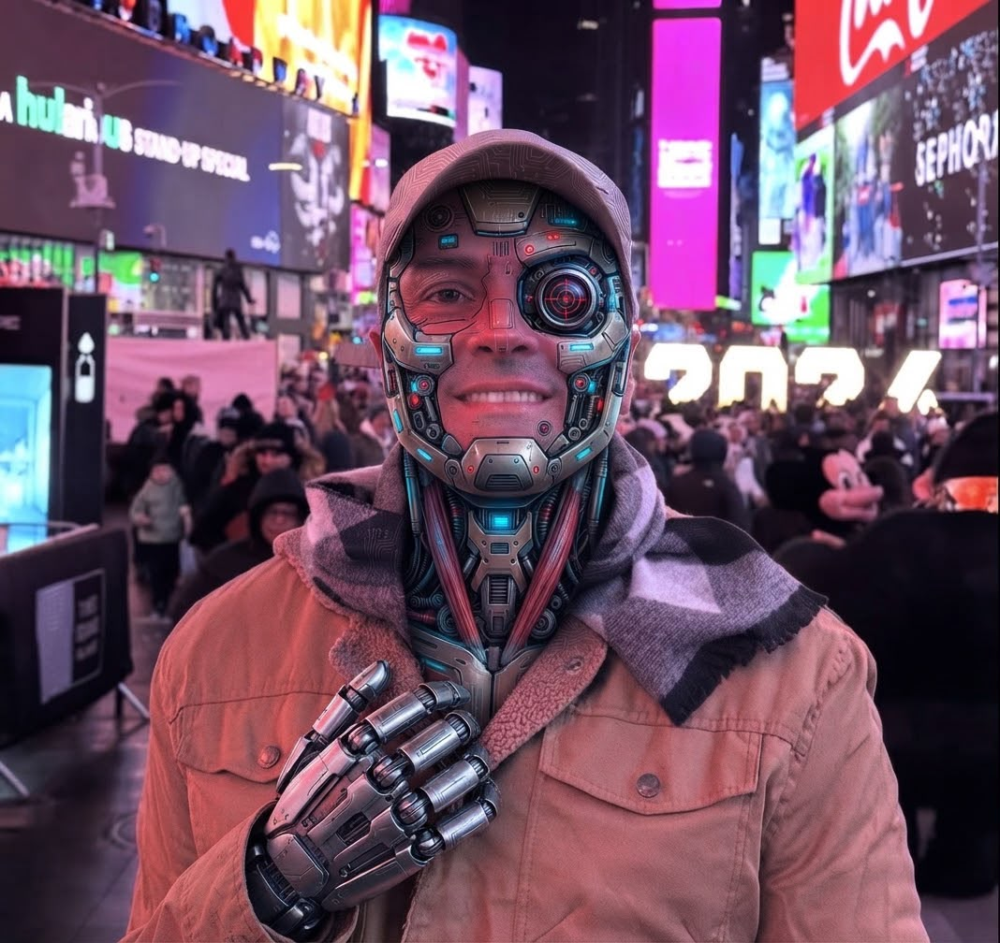

Um portal feito para transformar informações sobre inteligência artificial em conhecimento navegável: mercado, pesquisas, tecnologias, carreiras, tendências e estudos aprofundados.
88%das organizações pesquisadas usaram IA em ao menos uma função em 2025.
53%adoção populacional de IA generativa em três anos.
+127%crescimento do investimento privado em IA em 2025.
2030horizonte central do estudo do futuro do trabalho.

Market Intelligence
O mercado de IA por dentro.
A história do mercado de IA em 2026 não é apenas “a tecnologia está crescendo”. É uma combinação de capital, infraestrutura, adoção empresarial, produtividade, agentes, competição internacional e transformação do trabalho.
$581,7Binvestimento corporativo global em IA em 2025.
$344,7Binvestimento privado em IA em 2025.
70%das organizações pesquisadas usaram GenAI em pelo menos uma função.
53%adoção populacional de GenAI em apenas três anos.
$
Capital está acelerando
O AI Index 2026 registra US$ 581,69 bilhões de investimento corporativo global em IA em 2025, alta de 129,9% sobre 2024. O investimento privado chegou a US$ 344,66 bilhões.
⚙
Adoção é grande, escala ainda é desafio
88% das organizações pesquisadas relataram uso de IA. Ao mesmo tempo, a McKinsey encontrou muitas empresas ainda em experimentação ou piloto e agentes ainda em estágio inicial.
Mapa de forças do mercado
Visualização editorial do peso relativo dos temas, não uma pontuação de mercado.
Em vez de só mostrar notícias, esta área organiza os grandes temas do mercado em estudos curtos, expansíveis e conectados.
ECONOMIA • STANFORD
O dinheiro entrando na IA
Por que o investimento explodiu e o que isso significa para infraestrutura, startups, modelos e empresas.
AI Index 2026Economia
O que os dados mostram:
Investimento corporativo global chegou a US$ 581,69 bilhões em 2025.
O investimento privado cresceu 127,5%.
IA generativa cresceu mais de 200% no investimento privado.
Os custos de computação e infraestrutura também estão subindo.
Leitura: o mercado não está crescendo apenas pelo software. Ele exige chips, data centers, energia, nuvem, modelos e distribuição.
ECONOMIA • MCKINSEY
O paradoxo da adoção
Usar IA não significa automaticamente capturar valor financeiro. A diferença está em redesenhar processos.
2025Empresas
O ponto central:
Quase todas as empresas pesquisadas relatam algum uso de IA.
Quase dois terços ainda não haviam começado a escalar IA por toda a organização.
64% disseram que IA estava habilitando inovação.
23% relataram estar escalando algum sistema agentic AI e 39% experimentando agentes.
Conclusão do estudo: a próxima etapa é sair de pilotos isolados e conectar IA ao fluxo real de trabalho.
TRABALHO • WEF
O trabalho até 2030
O que empregadores esperam mudar em funções e habilidades durante a próxima transformação tecnológica.
WEF 20252030
Segundo o WEF:
170 milhões de novos postos são projetados e 92 milhões podem ser deslocados pelas grandes tendências até 2030.
IA e big data aparecem entre as habilidades de crescimento mais rápido.
Pensamento analítico, criatividade, resiliência e aprendizagem contínua continuam relevantes.
AI/ML specialists e software/application developers estão entre funções de crescimento mais rápido.
Importante: são projeções baseadas em pesquisa com empregadores, não uma garantia do que ocorrerá.
TECNOLOGIA • AGENTES
A próxima camada: agentes
De chatbots que respondem para sistemas que executam sequências de tarefas.
AgentsAutomação
Por que importa: agentes podem combinar modelos, ferramentas, memória, regras e ações. Mas o uso empresarial ainda é inicial: Stanford registra implantação em um dígito na maioria das funções, enquanto McKinsey encontrou 62% das empresas experimentando agentes.
TECNOLOGIA • MODELOS
A corrida dos modelos
A competição deixou de ser somente entre empresas: existe disputa por desempenho, custo, chips, dados e distribuição.
ModelosCompute
O mercado: a indústria produziu mais de 90% dos modelos de fronteira notáveis em 2025. A diferença entre modelos líderes dos EUA e China ficou pequena em vários benchmarks, enquanto a infraestrutura necessária continua sendo uma barreira importante.
TRABALHO • HABILIDADES
O que estudar?
Uma trilha baseada nas habilidades que estão ganhando importância, combinando tecnologia e capacidades humanas.
SkillsCarreira
Technology Map
Mapa das tecnologias.
Use esta área como um mapa: escolha uma tecnologia e depois conecte-a ao mercado e às carreiras.
GEN
IA Generativa
Modelos que geram texto, imagem, áudio, vídeo e código.
AG
Agentes de IA
Sistemas que planejam e executam sequências de tarefas usando ferramentas.
ML
Machine Learning
Modelos que aprendem padrões a partir de dados.
NLP
Linguagem Natural
Processamento, compreensão e geração de linguagem humana.
CV
Visão Computacional
Interpretação de imagens e vídeos por sistemas computacionais.
ROB
Robótica
Integração de software, sensores, controle e sistemas físicos.
Future of Work
Carreiras e habilidades.
O WEF aponta IA e big data, redes e cybersecurity e alfabetização tecnológica entre as habilidades que mais crescem em importância até 2030. A trilha abaixo transforma isso em caminhos de estudo.
Uma área editorial para transformar pesquisas grandes em ideias rápidas de acompanhar.
DESTAQUE • 2026
IA virou infraestrutura de negócio
Os dados recentes mostram uma combinação incomum: adoção empresarial elevada, investimento acelerado e uma corrida por infraestrutura. O desafio passa a ser transformar capacidade técnica em valor.
ECONOMIA
Investimento corporativo global mais que dobrou em 2025.
Stanford registra US$ 581,69 bilhões no ano.
EMPRESAS
Agentes avançam, mas a implantação ainda é inicial.
McKinsey aponta experimentação ampla e escala ainda limitada.
TRABALHO
IA e big data estão entre as habilidades que mais crescem.
WEF projeta forte transformação das habilidades até 2030.
APRENDIZADO
Aprender IA não é só aprender a usar uma ferramenta.
Programação, dados, pensamento analítico e aprendizagem contínua permanecem importantes.
Sobre o portal
Um lugar para aprender.
A ideia é que você consiga chegar ao assunto que quer em poucos cliques, estudar em blocos e voltar ao mercado para conectar tecnologia, trabalho e economia.
01
Navegação por contexto
Mercado, estudos, tecnologias e carreiras são áreas separadas para você não precisar atravessar uma página enorme.
02
Estudos expansíveis
Você abre apenas o conteúdo que quer ler, mantendo a interface limpa.
03
Fontes identificadas
Dados importantes vêm acompanhados das fontes originais para permitir conferência.
04
Construído para crescer
A estrutura permite adicionar notícias, novos estudos, cursos, login, banco de dados e um painel administrativo no futuro.
Contato
Fale conosco.
Área preparada para contato. O envio real de mensagens precisa ser conectado a um backend ou serviço de formulários.